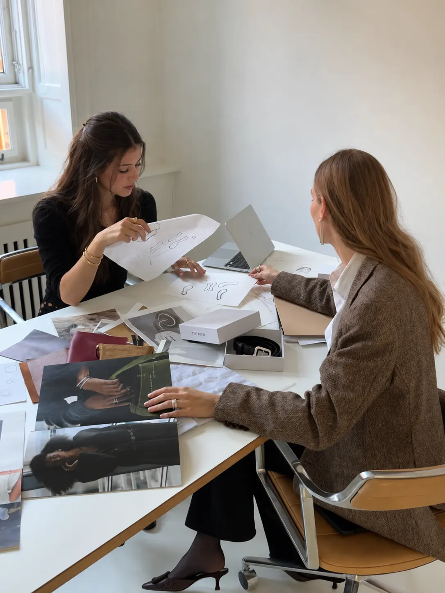
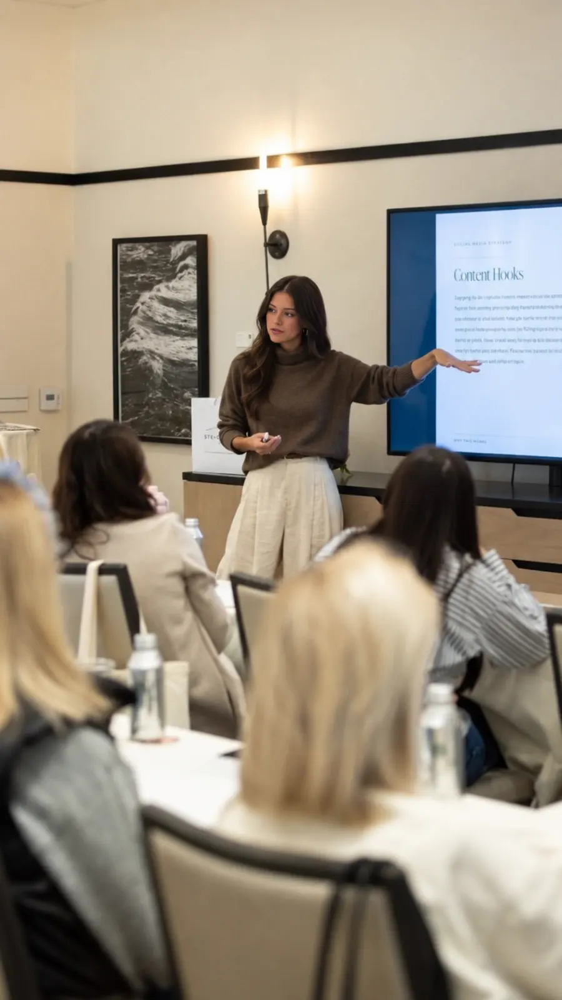
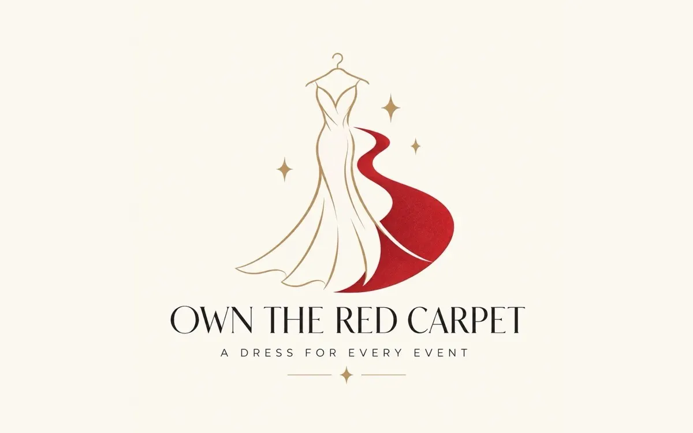
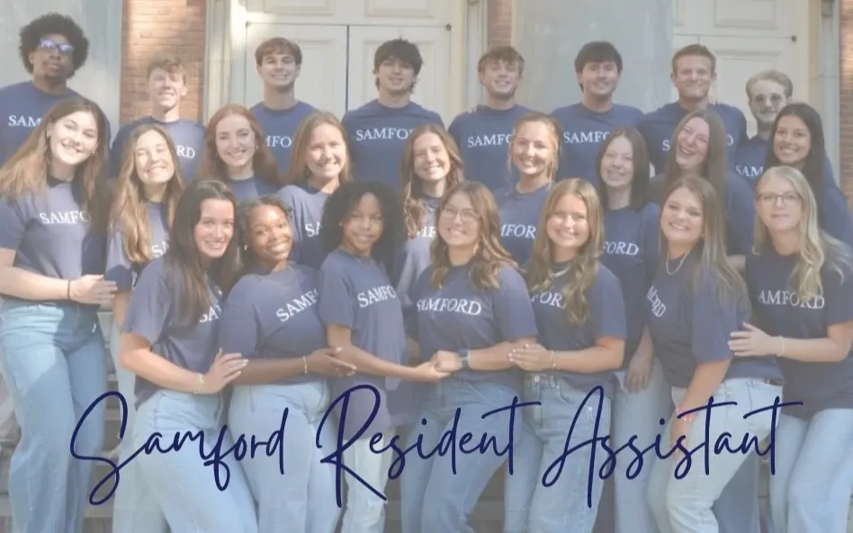
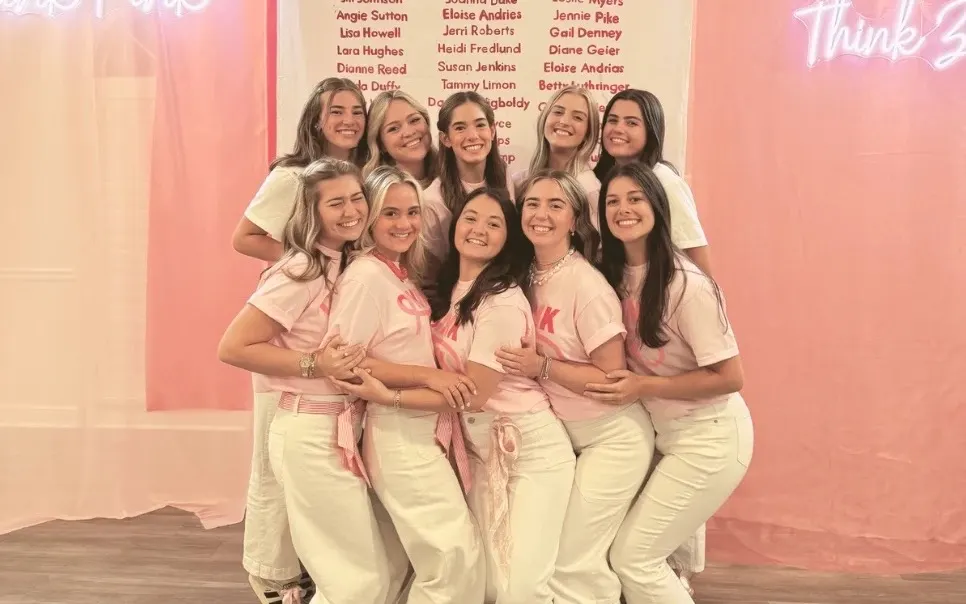
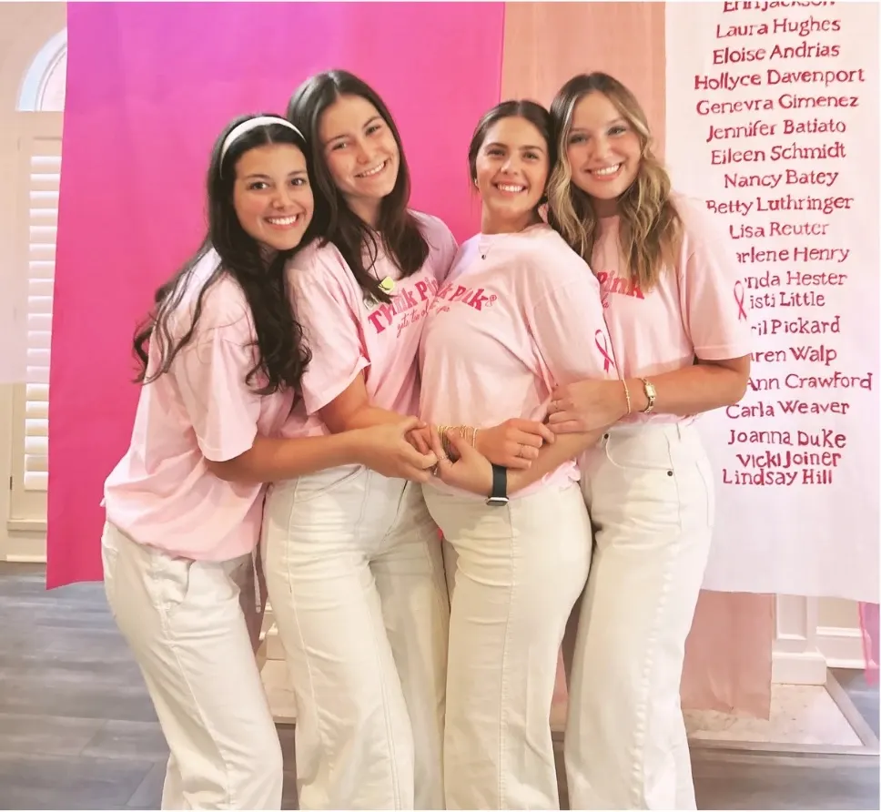
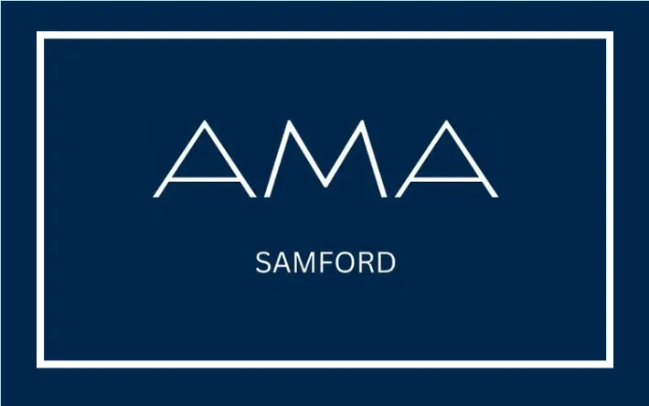
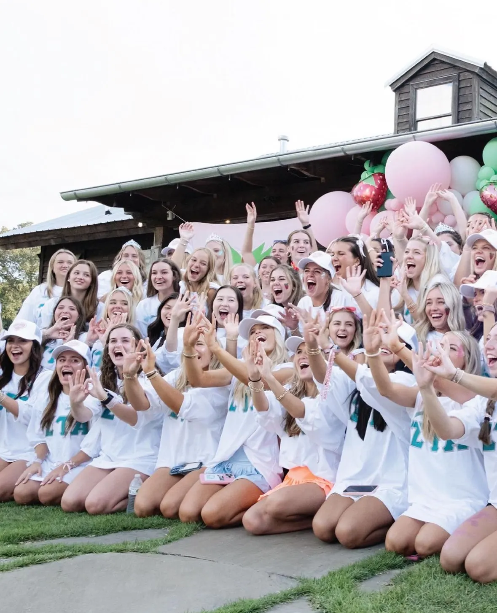
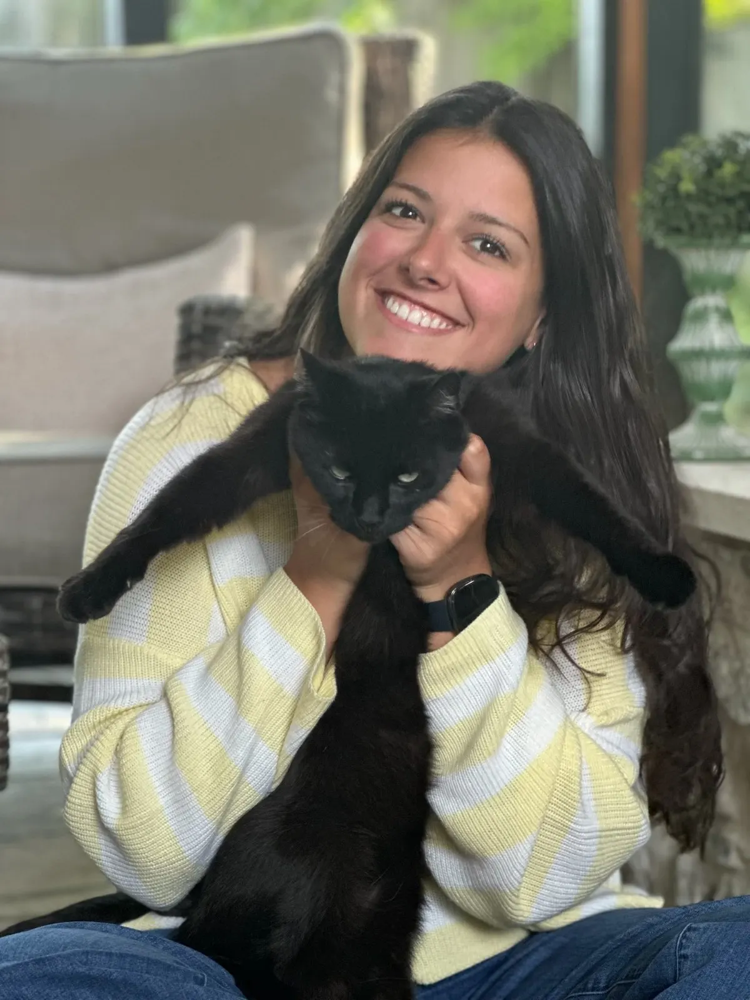

Addison Means: a marketing major with a path into Marketing Consultancy.
Marketing that knows
where the value sits.
Not just how it looks.
I plan and run marketing for businesses. Brand, content, campaigns and the numbers behind them.
Senior at Samford University in Birmingham, graduating Spring 2027. Coming home to Nashville, Tennessee — open to internships, freelance projects and full-time roles, there or remote.
Positioning, copy, social and paid media, and the reporting that shows what actually moved.
See what I do →Audience and competitor research, positioning, and the content and campaign plan that follows from it.
See past work →What I bring

MarketingWhere the story gets told
Professional sellingWhere they meetWhat I do · four topics, one person
All four in detail →Brand and message before anything ships
Positioning 02Copy, decks and collateral people actually read
Content 03Paid, organic and email — with a budget I can defend
Campaigns 04Audience research and competitive sets
ResearchExperience
Full experience & portfolios →You never have to explain
your customer to me.
Research, brand, content, campaigns.
A marketer who starts with the audience and finishes with the numbers. I am working toward a career that feels purposeful — one with room to grow and make a lasting impact — and the four areas below are the work I take on, in the order a project usually meets them.
Brand and message before anything ships
Who the audience is, what they need to hear and in what voice. For a small business that means the customer you actually want, the reason they choose you over the shop down the street, and the two things worth saying first.
See an example →Copy, decks and collateral people actually read
Social posts, landing pages, email and decks. Written to be understood in ten seconds of scrolling and still hold up when someone reads the whole thing. Built in Canva, with the numbers behind them in Excel.
Paid, organic and email — with a budget I can defend
Channel plans, creative, targeting and the weekly read-out. I track cost per lead, sign-ups and conversion, not impressions, and I say when a channel is not working.
See a campaign →Audience research and competitive sets
Who the audience already is, who it could be, and what the competition is doing — from surveys, interviews and public sources, turned into a page a decision-maker can use.
Four things, one person, one conversation. The message does not change hands as the project grows, and for the rest you never have to brief anyone twice.
Experience & portfolio work
Samford · 2023–2027Portfolios and
campus leadership.
Recruitment operations for Zeta Tau Alpha, a Resident Assistant role, and marketing work for clients and Samford coursework. The full portfolio is available on request.

Sep 2026 – presentMarketing Consultant
Own the Red Carpet · Fashion retail & dress rentalBuilding the strategy to reach a new college-student audience for a special-occasion dress boutique: audience and competitor research, brand positioning, social and content recommendations, and campaign concepts for launch — plus a logo refresh.

Aug 2026 – presentResident Assistant
Samford University · Residence LifeResponsible for a residence hall floor: community building, programming, conflict resolution and being the first call when something goes wrong.

Jan 2025 – Jan 2026Head of Recruitment Operations
Zeta Tau Alpha · SamfordPromoted to run the operations behind formal recruitment: the schedule, logistics, rounds and the team executing them, with the chapter's next class depending on it.

Jan 2024 – Jan 2025Assistant, Recruitment Operations
Zeta Tau Alpha · SamfordSupported the Head of Recruitment Operations through a full recruitment cycle — planning, materials and day-of execution — before stepping into the role.

Feb 2026 – presentAmerican Marketing Association
Samford chapter · MemberSpeakers, case work and networking with marketers in Birmingham and beyond.

Sep 2023 – presentZeta Tau Alpha
MemberThree years in the chapter, two of them on the recruitment operations team.
Selected work
Case studiesWhat I've done,
and what it did.
Reaching a new audience for Own the Red Carpet
A dress-rental boutique wanted college students. I am running the audience and competitor research, setting the brand positioning, and building the content and campaign plan that gets them there — with a logo refresh alongside it.
2026Running recruitment operations for Zeta Tau Alpha
Organized every Potential New Member file, coordinated all recruitment rounds and the extra events around recruitment week, and handled ordering, pick-up and service of meals for recruiting members — working in a team to put everything together and leading others into their jobs when they needed help.
2024–2026About
Nashville native · Samford seniorHi! I'm Addison Means,
Marketing Consultant.

I am a marketing major who likes the part of the job most people skip: the research behind the story, and the numbers behind the results. I am working toward a career that feels purposeful with room to grow and make a lasting impact, and I would like to build it in the city that raised me.
- Sep 2023
Joined Zeta Tau Alpha
First year at Samford. Found the chapter, and the recruitment team, early.
- Jan 2024
Assistant, Recruitment Operations
A full recruitment cycle behind the scenes — planning, materials, day-of execution.
- Jan 2025
Head of Recruitment Operations
Promoted to run the operation: schedule, logistics, rounds, and the team executing them.
- Feb 2026
Joined the American Marketing Association
Samford's AMA chapter — speakers, case work and networking with marketers in Birmingham and beyond.
- Aug 2026
Resident Assistant
Responsible for a residence hall floor: community building, programming and being the first call when something goes wrong.
- Spring 2027
Graduate, then home to Nashville
B.S. Marketing, a client portfolio in hand, and consulting work already underway.
Fact sheet
Samford University · Nashville, TNAddison in numbers.
Everything worth knowing before you call.
Questions
06 entriesThe questions I
hear most often.
What kind of marketing do you do?
Consulting for small businesses and organisations that need a plan, not just posts. In practice that means:
- audience and competitor research before anything is designed
- positioning and messaging you can hand to anyone on your team
- the content and campaign plan that follows, with a way to tell whether it worked
Right now that is a live client, coursework projects, and three years running operations for a 200-member organisation.
What kind of work are you looking for?
Any of it — internships and freelance projects now, and a full-time role in Nashville from Spring 2027. Ideally consulting, brand or content work for a small business, agency or nonprofit, and remote works too.
Why Nashville?
Because it is home. I was born and raised in Nashville and watched it grow over the years — and decided I wanted to be part of that expansion, not just watch it. It is a beautiful city, and I want to help make it a wonderful, desired place to spend time.
What does a project with you look like?
A short call to understand the business, a one-page brief you sign off on, then the work in agreed stages with a weekly check-in. You always know what is coming next.
Do you have a portfolio I can download?
Yes — a marketing portfolio with the client and coursework projects in full. Available on request.
How do I reach you?
Email is fastest. Everything is in the contact section below, and I reply within one business day.
Get in touch
Replies within one business dayBetter still, just say hello.
Fifteen minutes is enough to see the work, hear what you need and know whether I am the right person for it.
→Send an email